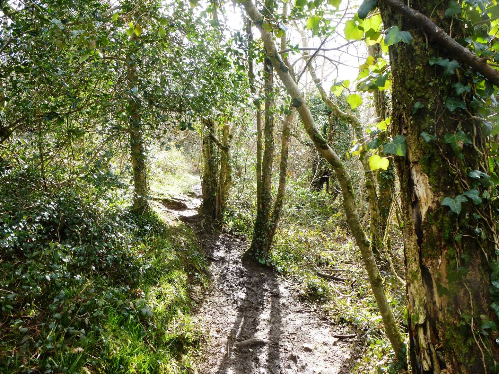
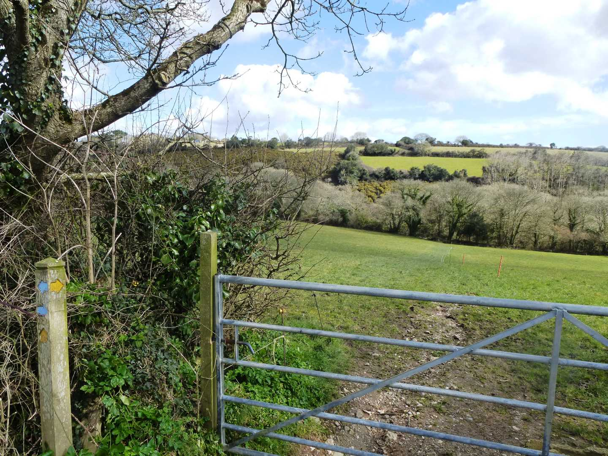

Start Ref: 791 394
End Ref: 791 394
Distance: 2.5 miles
Time: 1hrs
Starting at the Lower Carnon Valley car park, where we have left the car, we are going to head up the road past the bus stop and then turn left and follow the road past the Village Hall and on to Devoran Quay. Here, we could use the Tidal Footpath to cross Tallack`s Creek, but as we want to keep our boots relatively mud free, we are going to follow the road left and then right in to Old Tram Road. As we follow this road along the side of the upper reaches of Restronguet Creek, we will find a little grassed area on our right with a couple of benches, that let us stop and admire the view. Continuing on, we come to a right hand bend in the road, with a road to Heron Creek on the far side of the bend. Next to this road is a footpath which follows up a narrow path beside this road. We are going to take this footpath.
Gently up the hill we walk, until we emerge through a kissing gate into a field. Keeping to the lower left edge of this field, we continue on and into a small patch of trees, from which we emerge as we step down a hedge stile and back into another field. Again hug the lower left edge of this field and now we enter into the small woodland in the valley.
Follow the track, as it takes us over a small stone hedge (with a well hidden stile) and continue on until we come to a cross roads of footpaths. Here, turn left as the path flattens out, and as it drops down a little there is another splitting of paths. One, to the right, goes through a gate, the other, to the left, keeps the field on our right and heads towards the stream. This is the one we are following. Over the stream by the small bridge and then up the bank and over the hedge in to the field opposite. Walk straight up and across this field to the gate at the top, which we are going to go through. Here we are going to turn left and follow the wide path, BUT, first look back across the valley to the lovely field of gorse opposite.
Follow the track down and past the pig enclosure, and then through the gate (which is well marked as a public path). Just after this gate we have the option of following the footpath or the bridleway. So as not to retrace our steps too much, we are going to bear right onto the bridleway, until it bears left and becomes a tarmac lane. This lane is well over hung with trees and makes a lovely avenue in the summer months. Follow it on down and suddenly we find ourselves back by the start of Old Tram Road.
Here, we have a couple of options. First, we could retrace our steps back to our car, or (as I favour) we could turn right and visit the Old Quay Inn for a refreshment, and then retrace our steps back to the car. I leave it to you, but Cornish for “Cheers” is “Yeghes Da”– just saying!
I hope that you enjoy.